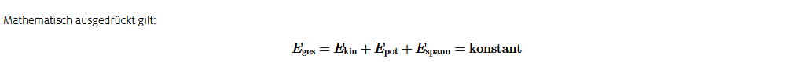
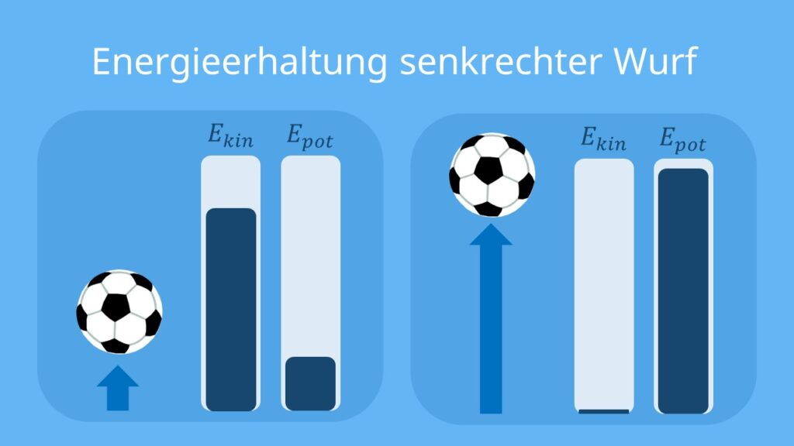
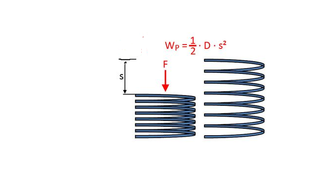
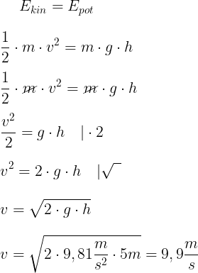
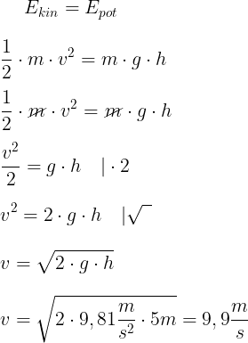
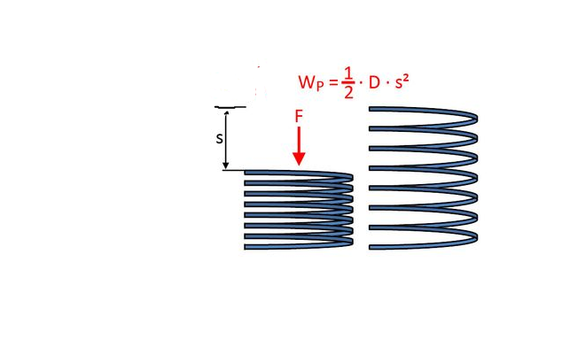

Bei einem Senkrechten Wurf wird ein Objekt mit einer Anfangsgeschwindigkeit vertikal nach oben geworfen.
Der Punkt, bei dem das Objekt die höchste Höhe erreicht hat, nennt man Umkehrpunkt.
In diesem Punkt ist die Geschwindigkeit gleich Null und dabei ändert sich die Richtung des Objekts.
Er wird nach unten beschleunigt.
Damit man die Zeit am höchsten Punkt berechnen kann, setzt man die Gleichung gleich Null (Geschwindigkeit am höchsten Punkt = 0)
Es gibt auch eine zweite Formel, in der man die Strecke in Abhängigkeit der Zeit berechnen kann.
Der Waagerechter Wurf ist eine zwei dimensionale Bewegung, bei dem die gleichförmige Bewegung und die beschleunigte Bewegung gleichzeitig wirken.
In der x-Richtung bewegt sich der Körper mit Gleichförmiger Bewegung, während in der y-Richtung sich der Körper gleichmäßig beschleunigt, wobei die Beschleunigung als Erdbeschleunigung definiert ist a = g.
Der Punkt, bei dem das Objekt die höchste Höhe erreicht hat, nennt man Umkehrpunkt.
In diesem Punkt ist die Geschwindigkeit gleich Null und dabei ändert sich die Richtung des Objekts.
Er wird nach unten beschleunigt.
Damit man die Zeit am höchsten Punkt berechnen kann, setzt man die Gleichung gleich Null (Geschwindigkeit am höchsten Punkt = 0)
Es gibt auch eine zweite Formel, in der man die Strecke in Abhängigkeit der Zeit berechnen kann.
4.2. Waagerechter Wurf
Der Waagerechter Wurf ist eine zwei dimensionale Bewegung, bei dem die gleichförmige Bewegung und die beschleunigte Bewegung gleichzeitig wirken.
In der x-Richtung bewegt sich der Körper mit Gleichförmiger Bewegung, während in der y-Richtung sich der Körper gleichmäßig beschleunigt, wobei die Beschleunigung als Erdbeschleunigung definiert ist a = g.

4.3. Schiefer Wurf
Der Schiefer Wurf ist ebenfalls eine zwei dimensionale Bewegung, bei dem auch die gleichförmige Bewegung und die beschleunigte Bewegung gleichzeitig wirkt.Der große Unterschied zwischen den Waagerechten und den schiefen Wurf besteht darin, dass beim schiefen Wurf der Abwurfswinkel die Geschwindigkeit, Zeit und Strecke beeinflussen kann.
Aufgrunddessen beinhalten die Formeln des Schiefen Wurfs auch den sinus und den cosinus. Beim Waagerechten Wurf ist der Winkel immer 0 Grad.

5. Energieerhaltungssatz
Der Energieerhaltungssatz besagt, dass in einem abgeschlosseneen System die Summe aller Energien immer gleich bleibt.
5.1 Potentielle Energie
Die Potentielle Energie liegt vor, wenn ein Körper oberhalb des Erdbodens befindet. Zum Beispiel, wenn ich einen Ball hoch schieße, verfügt dieser über Potentielle Energie aufgrund seiner höhe.Dabei ist (m) die Masse des Körpers, (g) der Ortsfaktor (Fallbeschleunigung, auf der Erde etwa 9,81 m/s²) und (h) die Höhe über dem Erdboden.
Man kann auch eindeutig sehen, dass wenn der Körper nicht über dem Erdboden ist (h=0), dann ensteht keine Potentielle.
Ein Produkt wird Null, wenn einer der Faktoren Null wird.
5.2. Kinetische Energie
Die Kinetische Energie liegt vor, wenn sich ein Körper bewegt. Wenn ein Körper träge ist und sich nicht bewegt, beträgt seine kinetische Energie null.Je schneller ein Objekt sich bewegt, desto höher ist seine kinetische Energie.
Beispiel
Ein Ball wird senkrecht nach oben geworfen und erreicht eine maximale Höhe von 5 m. Wie ist die Beziehung zwischen potentieller und kinetischer Energie?Bevor der Ball überhaupt geworfen wird, sind die potentielle und kinetische Energie gleich null, da der Ball sich nicht bewegt und keine Höhe hat.
Nachdem der Ball senkrecht geworfen wird, ist die kinetische Energie am höchsten, da der Ball aufgrund einer Anfangsgeschwindigkeit nach oben aufgetrieben wird.
Die potentielle Energie hingegen steigt kontinuierlich, bis der Ball die maximale Höhe von 5 m erreicht hat, dann ist die potentielle Energie am höchsten.
In diesem Prozess wandelt sich die anfängliche kinetische Energie in potentielle Energie um. Denn am höchsten Punkt ist die kinetische Energie gleich null, da sich die Bewegungsrichtung des Balls ändert.
Gleichzeitig ist auch die Potentielle am höchsten.
Während der Ball nun fällt, steigt die kinetische Energie, während die potentielle Energie abnimmt, da der Ball an Höhe verliert.
Der Ball nimmt an Geschwindigkeit zu da der Ball sozusagen einen Freien Fall ausübt, also er beschleunigt mit einer Beschleunigung von 9,81 m/s², weshalb die kinetische Energie beim fallen steigt.

Stell dir vor, du ziehst einen Gummiband auseinander oder drückst eine Feder zusammen, dabei speichert sich Energie in diesen Materialien.
Wenn du das Gummiband loslässt oder die Feder loslässt, wird diese gespeicherte Energie freigesetzt und in Bewegung umgewandelt.

Wie können wir die Geschwindigkeit des Balls berechnen?

In beiden Seiten steht die Masse, weshalb wir diese kürzen können.
Wir multplizieren die Gleichung mit mal zwei, sodass die Geschwindigkeit alleine steht.
Da die Geschwindigkeit quadriert ist, sollte noch die Wurzel gezogen werden.
Der Ball kommt mit einer Geschwindigkeit von 9,9m/s am Boden an.

Da der Energieerhaltungssatz besagt, dass in einem abgeschlossenen System die Summe aller Energien gleich bleibt, kann man die wirkenden Energien gleichsetzen. In diesem Fall ist die kinetische Energie gleich der potentiellen Energie.
Beschreibung der Rechnung
Nun sollte diese Gleichung nach der Geschwindigkeit umgeformt werden.
In beiden Seiten steht die Masse, weshalb wir diese kürzen können.
Wir multplizieren die Gleichung mit mal zwei, sodass die Geschwindigkeit alleine steht.
Da die Geschwindigkeit quadriert ist, sollte noch die Wurzel gezogen werden.
Der Ball kommt mit einer Geschwindigkeit von 9,9m/s am Boden an.
5.3 Spannenergie
Die Spannenergie ist eine Art von Energie, die in gespannten oder zusammengedrückten Objekten steckt.Stell dir vor, du ziehst einen Gummiband auseinander oder drückst eine Feder zusammen, dabei speichert sich Energie in diesen Materialien.
Wenn du das Gummiband loslässt oder die Feder loslässt, wird diese gespeicherte Energie freigesetzt und in Bewegung umgewandelt.

wobei D für die Federhärte steht und s die Strecke des Ausgedehnten Material.